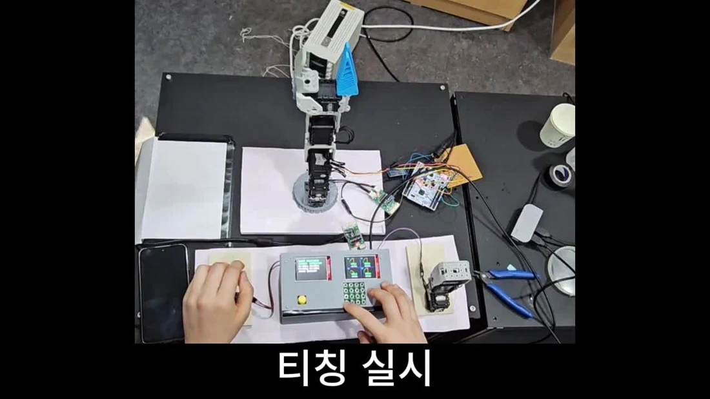
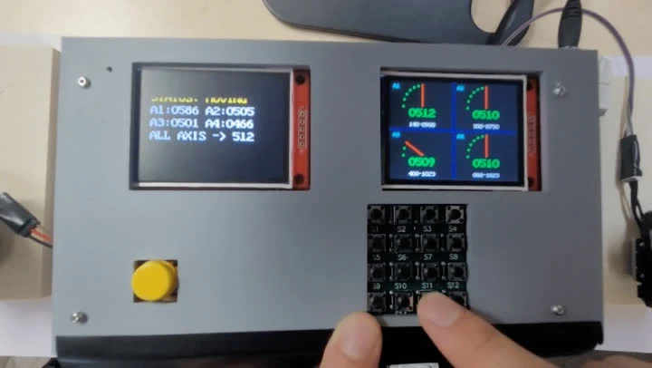

01 / ROBOT CONTROL팀 통합 시연
ARMIGO
무선 Leader–Follower 로봇 팔
조작용 로봇 팔의 자세를 무선으로 전달하고, 저장한 자세를 반복 실행하는 시스템입니다.
- 담당
- UI·판단 로직·티칭, 무선 통신과 시스템 연동
전민석과 공동 담당
구현과 개선 과정
사용자 입력과 티칭
키패드로 운전 모드와 프리셋을 선택하고, TFT LCD에 4축 위치와 운전 상태를 표시했습니다. 자세 데이터를 플래시 메모리에 저장해 Auto 모드에서 다시 실행하도록 구성했습니다.
통신 지연과 연결 불안정
Polling 수신의 반복 대기가 제어 주기에 영향을 주는 것을 확인하고 인터럽트 기반 수신으로 변경했습니다. STM32 클럭과 UART 통신 속도의 불일치를 조정하고 HC-05의 Master·Slave 역할을 다시 설정해 연동을 확인했습니다.

팀 프로젝트의 UI·티칭·통신을 공동 구현했습니다.